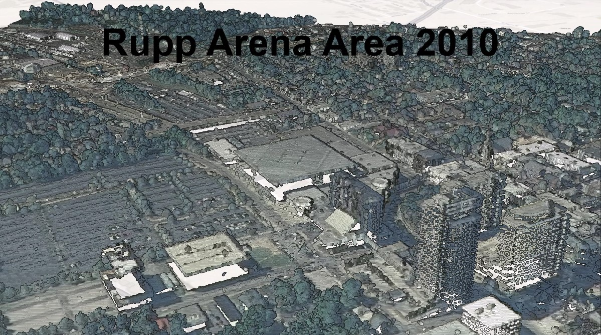
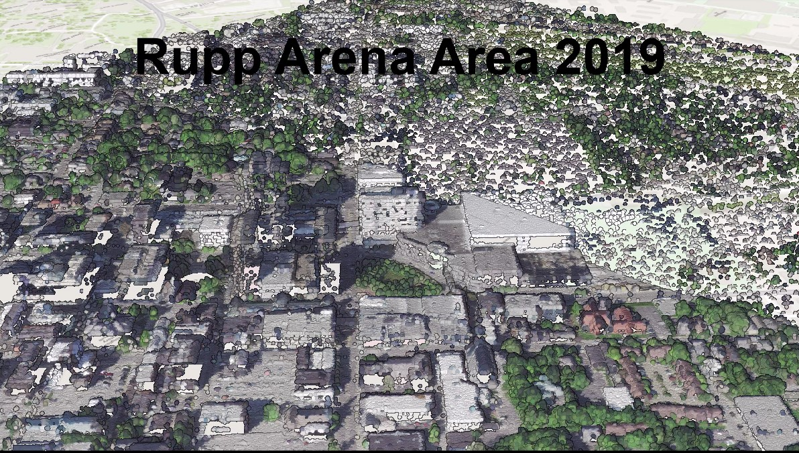

Point clouds of areas around Rupp Arena that have been changed.
In the past decade in Lexington, there have been many develpments in the area around Rupp Arena, with expansion to the arena, the construction of City Center, and the Construction of Oliver Lewis Way. This also shows the removal of the Davis Bottom neighborhood.
The goal of this project is to visualize were infrastructor has been removed and built in the past almost decade in the area around Rupp Arena. The visulizations are created using Lidar from 2010 and 2019 and comparing the changes.
Visualizations created from lidar phase 1 from 2010 and phase 2 from 2019 as well as 2010 and 2020 NAIP data provided by KyFromAbove in ArcGIS Pro and Cesium Ion. Additional sources of information from Discover Archaeology Kentucky , May, 2024.
Page and visualizations created by Jaylin Basinger for GEO 409, Department of Geography, University of Kentucky. Spring 2024.
Development of the area visualized by comparing above ground features
 2010 Point Cloud Fly throughLink to Youtube video of animation of 2010 point cloud
 2019 Point Cloud Fly throughLink to Youtube video of animation of 2019 point cloud